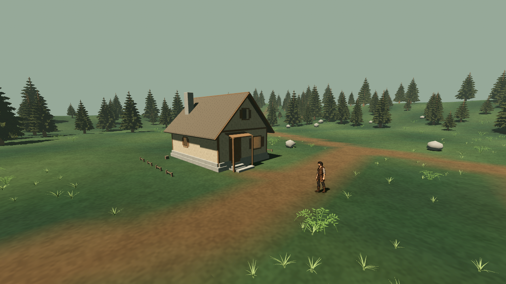

AshBound · Лесные дворы
Проба атмосферы 0.23.1: насыщенная земля и лес, холодные глубокие тени, тёплые комнаты. Все шесть состояний сняты в одной сцене с одной позиции камеры. Это реальные кадры Godot Mobile, а не концепт-арт. Художественная оценка владельца ещё впереди.

Интерьеры под ливнем
Капли и брызги остаются снаружи. Через дверь и окна погода продолжает быть видна; холодная улица отделяется от тёплой комнаты.
В игре: «Время» перебирает утро → день → сумерки → ночь. «Погода»: ясно → дождь → сильный ветер → туман → ливень → автоматическая смена. Переход погоды занимает 12 секунд, намокание и высыхание — дольше. Сутки идут 24 реальные минуты. На ПК Esc освобождает курсор для кнопок.
Проверки, параметры и ограничения · Общая расстановка